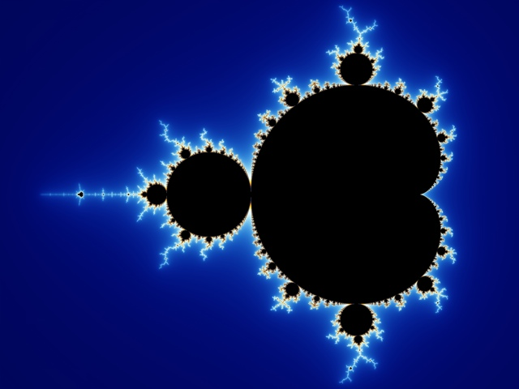

Mandelwhat?
The Mandelbrot Set is the most famous example of a fractal. It's a beautiful pattern that repeats infinitely as you zoom in. Despite its visual complexity, a Mandelbrot Set can be generated from a relatively simple formula.

However, this Mandelbrot Set is constructed with cat gifs.
Click to zoom in. Try exploring parts with lots of different cats.